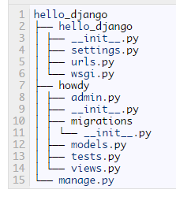

Flask与Django对比
- Django vs Flask

- Flask

框架之间的差别
Django功能大而全，Flask只包含基本的配置 Django的一站式解决的思路，能让开发者不用在开发之前就在选择应用的基础设施上花费大量时间。Django有模板，表单，路由，认证，基本的数据库管理等等内建功能。与之相反，Flask只是一个内核，默认依赖于两个外部库： Jinja2 模板引擎和 Werkzeug WSGI 工具集，其他很多功能都是以扩展的形式进行嵌入使用。
Flask 比 Django 更灵活 用Flask来构建应用之前，选择组件的时候会给开发者带来更多的灵活性 ，可能有的应用场景不适合使用一个标准的ORM(Object-Relational Mapping 对象关联映射)，或者需要与不同的工作流和模板系统交互。
Flask 在 Django 之后发布，现阶段有大量的插件和扩展满足不同需要 Django发布于2005年，Flask创始于2010年年中。
入门引导
Flask的Hello World应用的代码是最简单的，只用在一个Python文件里码7行代码就够了。
from flask import Flask
app = Flask(__name__)
@app.route("/")
def hello():
return "Hello World!"
if __name__ == "__main__":
app.run()
上面代码就已经是一个简单的 web 应用，从上面的 Hello World 应用的特点来看，一个没什么Python web开发经验的人就可以很快的上手开始撸代码。
项目区别
Django 创建项目和创建应用
django-admin startproject hello_django
django-admin startapp howdy
其目录结构： 
默认情况下，Django项目和应用创建好了之后，只包含空的模型和模板文件，而Flask创建项目之后，目录里面没有任何文件，需要我们手动创建，是没有像Django一样组件分离，而对于需要把组件分离开的项目，Flask有blueprints。例如，你可以这样构建你的应用，将与用户有关的功能放在user.py里，把与销售相关的功能放在ecommerce.py里。
Django把一个项目分成各自独立的应用，而Flask认为一个项目应该是一个包含一些视图和模型的单个应用。当然我们也可以在Flask里复制出像Django那样的项目结构。
模版
Django的模版大家都很熟悉,我们举一个简单的例子
<!-- view.html -->
<div class="top-bar row">
<div class="col-md-10">
<!-- more top bar things go here -->
</div>
{% if user %}
<div class="col-md-2 whoami">
You are logged in as {{ user.fullname }}
</div>
{% endif %}
</div>
{% for widget in inventory %}
<li><a href="/widget/{{ widget.slug }}/">{{ widget.displayname }}</a></li>
{% endfor %}
Flask默认使用一个受Django启发而发展起来的名为Jinja2的模板，其实，所有上面的Django模板的例子在Jinja2里也是好使的。
模版简单对比
<!-- Django -->
<div class="categories">Categories: {{ post.categories|join:", " }}</div>
<!-- Jinja -->
<div class="categories">Categories: {{ post.categories|join(", ") }}</div>
在Jinja的模板语言里，可以把任何数量的参数传给过滤器，因为Jinja像调用一个Python函数的方式来看待它，用圆括号来封装参数。Django使用冒号来分隔过滤器名和参数，这样就只能传递一个参数了。
- Flask的Jinja模版 for-else-endfor
{% for item in inventory %}
<div class="display-item">{{ item.render() }}</div>
{% else %}
<div class="display-warn">
<h3>No items found</h3>
<p>Try another search, maybe?</p>
</div>
{% endfor %}
- Django模版 for-empty-endfor
{% for item in inventory %}
<div class="display-item">{{ item.render }}</div>
{% empty %}
<div class="display-warn">
<h3>No items found</h3>
<p>Try another search, maybe?</p>
</div>
{% endfor %}
除了上述的语法区别，Flask还提供了很多特有的上下文变量(url_for,get_flashed_messages()等)